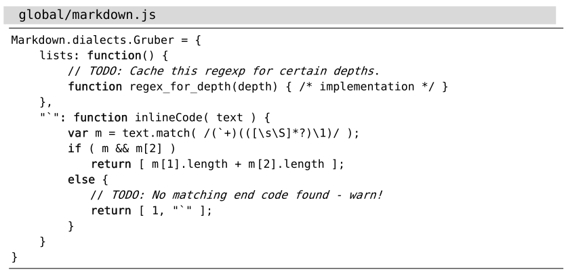

技巧99将TODO项收集至寄存器
通过把:global 和:yank这两条命令结合在一起，我们可以把所有匹配{pattern}的文本行收集到某个寄存器中。
下列代码包含了几行以“TODO”开头的注释行：

假设我们想把所有TODO项收集到一起。只需输入以下命令，这些信息就会变得一览无余：
➾:g/TODO
《 // TODO: Cache this regexp for certain depths.
// TODO: No matching end code found - warn!
请牢记，:print是:global命令的缺省[cmd]，它只是简单地回显所有匹配单词“TODO”的文本行。这并没什么用处，因为一旦执行了其他命令，这些信息将会消失。
这里介绍另外一种做法。先将所有包含单词“TODO”的文本行复制到某个寄存器，再把寄存器的内容粘贴到其他文件中，以备不时之需。
这一次，我们将用到寄存器a。首先要运行qaq，将其清空。我们对这个命令进行一下分解。qa会让vim开始录制宏，并把它存到寄存器a中，而最后的q则负责终止录制。由于在录制宏的过程中，我们没有敲击任何按键，因此寄存器最终被清空了。我们可以用下面的命令印证一下：
➾:reg a
《 --- Registers ---
"a
现在，我们可以把包含TODO注释的行复制到此寄存器中了：
➾:g/TODO/yank A
➾:reg a
《 "a // TODO: Cache this regexp for certain depths.
// TODO: No matching end code found - warn!
此处有一个窍门，即要用大写字母A引用寄存器。这意味着Vim将把内容附加到指定的寄存器，而用小写字母a的话，则会覆盖原有寄存器的内容。因此，这条global命令可以被解读为“将所有匹配模式 /TODO/ 的文本行依次附加到寄存器a。”
这一次，当我们再次运行:reg a时，会发现寄存器a已经存有两组源自文档的TODO项了。（为了方便阅读，我已将这些内容调整为两行，但在Vim中，换行符实际会显示为^J。）此后，我们只需在任意分割窗口中打开一个新缓冲区，再运行"ap命令，就可以将寄存器a的内容粘贴进去了。
结论
在本例中，我们只收集了两个TODO项，即使手动操作也可以很快地完成。但是，以上介绍的技术具有很好的扩展性。如果某篇文档包含十几个TODO项，采用该技巧将使我们事半功倍。
我们甚至可以将:global命令与:bufdo或:argdo一起搭配使用，从一组文件中收集所有的TODO项。这个任务就留给你作为练习吧，你可以参考技巧96中类似的工作流程。
还有另外一种方案：
➾:g/TODO/t$
这里用到的:t命令，已经在技巧29中有所介绍。该命令是将所有TODO项复制到当前文件的末尾，而不是把它们附加到寄存器。一旦运行完该命令，我们就可以在文件的末尾看到这些TODO项了。由于此法不会影响寄存器的内容，因此相对简单直接，但它在与:argdo以及 :bufdo命令一起使用时不太干净利落。